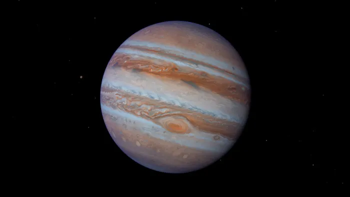
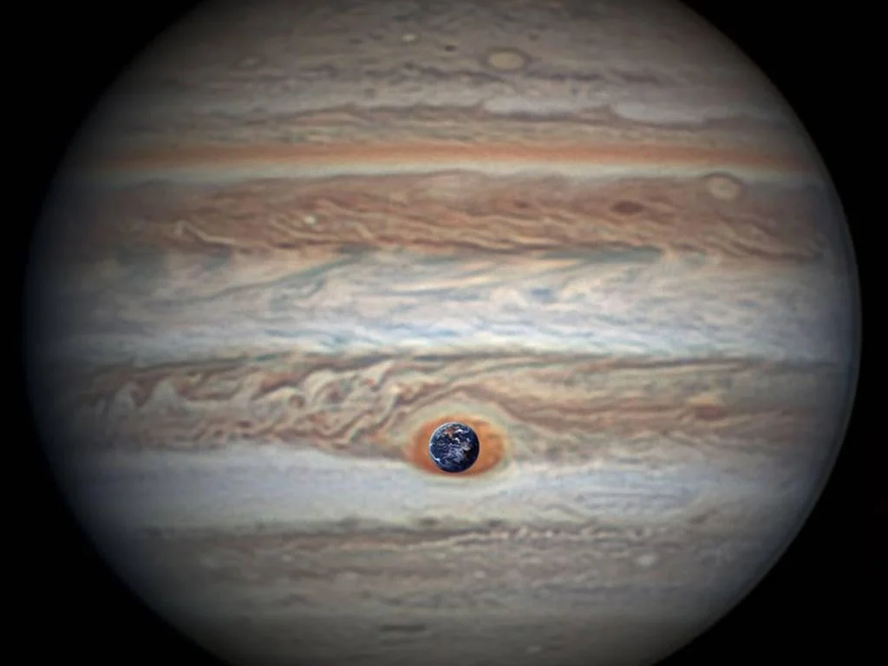

Maior planeta do Sistema Solar, tanto em diâmetro e em massa, e é o quinto em relação ao Sol.

Ele tem uma tempestade maior que a Terra, que chamamos de A Grande Mancha Vermelha.

É um gigante gasoso, composto principalmente por hidrogênio e hélio, com possível núcleo rochoso. Sua rápida rotação (cerca de 10 horas) o torna um planeta com formato achatado nos polos e com uma atmosfera cheia de faixas e tempestades intensas, como a famosa Grande Mancha Vermelha, maior que a Terra. Observável a olho nu, é o quarto objeto mais brilhante do céu e possui pelo menos 95 luas, incluindo as quatro maiores descobertas por Galileu: Ganimedes (maior lua do Sistema Solar), Calisto, Io e Europa. Júpiter também tem um tênue sistema de anéis e uma poderosa magnetosfera. Diversas sondas já o visitaram, como as Voyager, Pioneer e Galileu, além da atual sonda Juno, em órbita desde 2016. Um dos maiores interesses atuais é Europa, uma de suas luas, que pode abrigar um oceano sob a superfície de gelo.